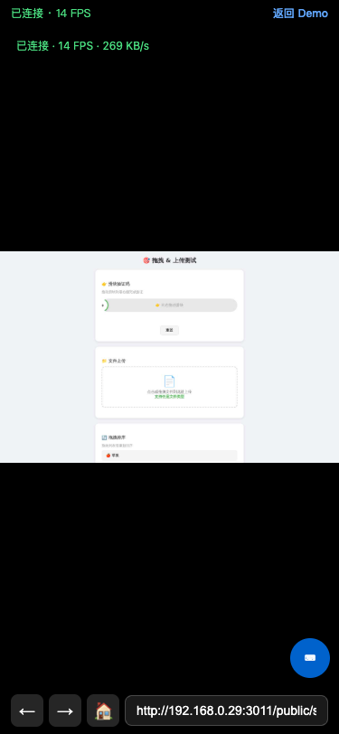

测试 2: 移动端工具栏 + URL 导航 ✅ 通过
验证顶部状态栏和底部导航栏在移动端的显示与功能。
| 组件 | 状态 | 详情 |
|---|---|---|
| 顶部状态栏 | ✅ 显示正常 | 显示连接状态、FPS、网速（绿色文字）+ "返回 Demo" 链接 |
| 底部导航栏 | ✅ 显示正常 | ← 后退 · → 前进 · 🏠 首页 · [URL输入框] |
| URL 输入框 | ✅ 可交互 | placeholder="输入网址..."，type=url，支持 form submit 触发导航 |
| 导航到 slider-test | ✅ 成功 | 通过 form submit 发送 navigate 消息，远程浏览器加载了 slider-test.html |
| 导航后 FPS | ✅ 稳定 | "已连接 · 14 FPS · 269 KB/s" |

④ 工具栏完整显示

⑤ 导航到 slider-test.html 成功